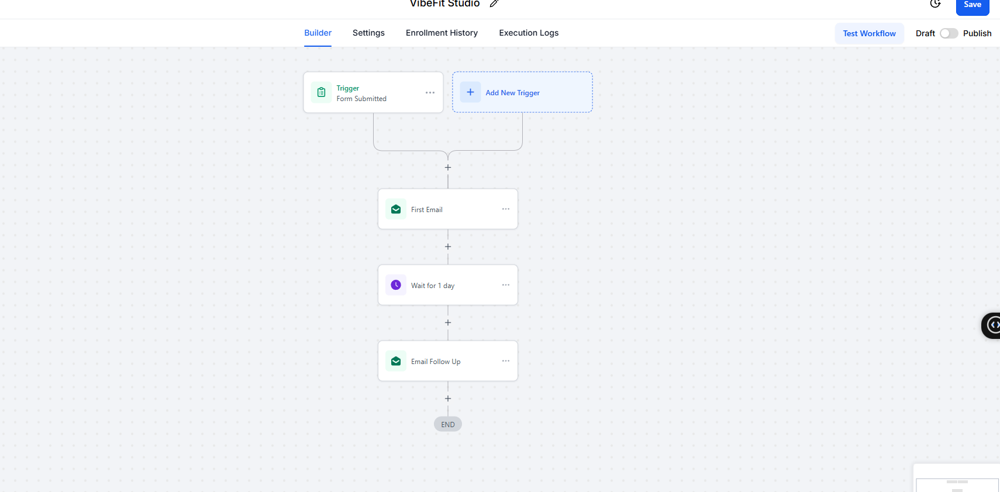
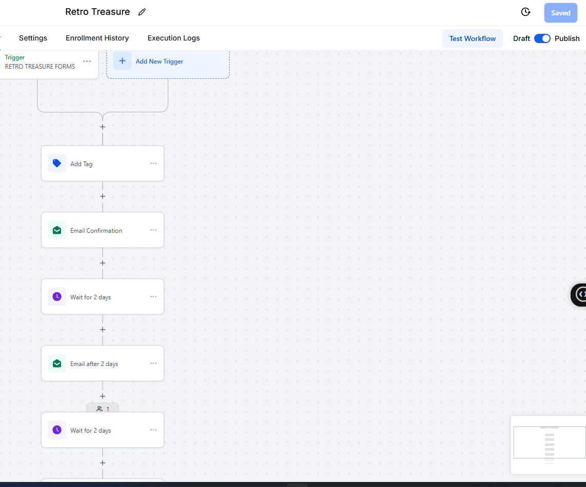
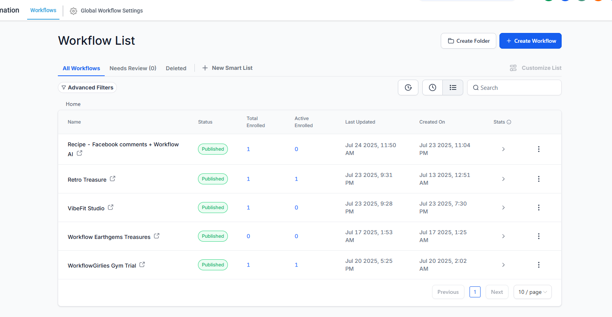
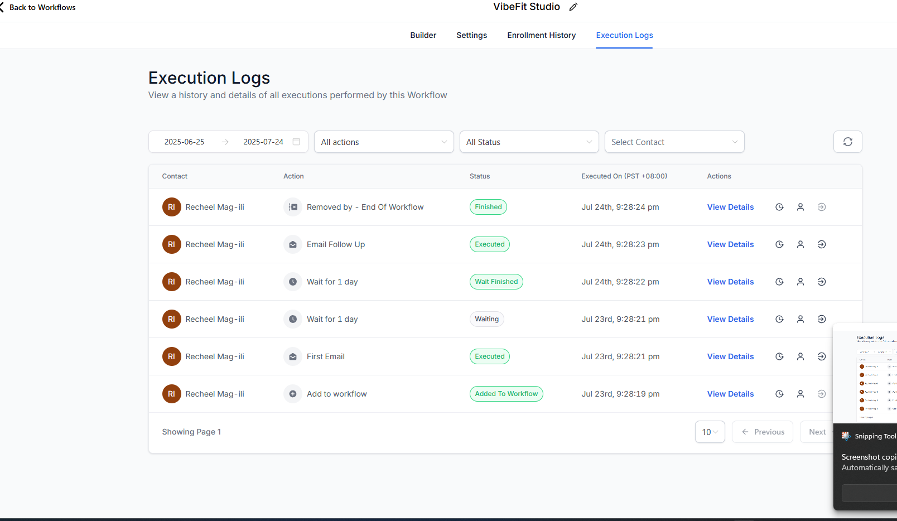

I design and deploy AI-powered workflows using GoHighLevel, n8n, and Make.com — helping businesses eliminate manual tasks and scale effortlessly.
Real GHL workflows I've built and deployed for fitness studios and e-commerce businesses.

Automated end-to-end lead follow-up for a fitness studio. When a prospect submits a form, the workflow immediately fires a personalized welcome email, waits 24 hours, then sends a follow-up — all without human intervention.

Multi-step onboarding sequence triggered via custom forms. Tags contacts, sends confirmation, then drips emails over several days.

Combines GHL social planner with an AI workflow that responds to Facebook comments automatically using Claude for context-aware replies.
Execution logs proving real-world deployment — not just mockups.

Live execution log showing the full contact journey: Added to Workflow → First Email → Wait → Follow Up → Finished. All steps executed successfully.
Managing 5 published workflows across multiple client accounts — VibeFit Studio, Retro Treasure, WorkflowGirlies Gym Trial, and more.
A growing stack of automation, AI, and development skills.
Building complex automation sequences in GoHighLevel — triggers, waits, emails, tagging, and multi-branch logic.
Learning open-source workflow automation with n8n — connecting APIs, webhook triggers, and data transformations.
Exploring Make.com's visual scenario builder for connecting SaaS apps and automating complex multi-step processes.
Integrating Claude and other LLMs into workflows for intelligent, context-aware automation that responds like a human.
Learning to use Claude Code for AI-assisted software development — building scripts and tools to extend automation capabilities.
Configuring pipelines, contact management, and automated follow-up sequences that keep leads engaged without manual effort.
I'm an AI Automation specialist focused on helping businesses eliminate repetitive manual work through intelligent workflow design. My core expertise is in GoHighLevel, where I've built and deployed live automation systems for fitness studios, e-commerce brands, and more.
I believe the best automations are ones you forget about — they just work. From the moment a lead fills in a form to their first purchase and beyond, I design systems that handle communication, tagging, and follow-up seamlessly.
I'm actively expanding my skill set: currently studying n8n and Make.com for deeper integrations, and exploring Claude Code to bring AI-assisted development into my workflow toolkit.
Whether you need a custom GHL workflow, an AI integration, or an end-to-end automation system — let's build it together.